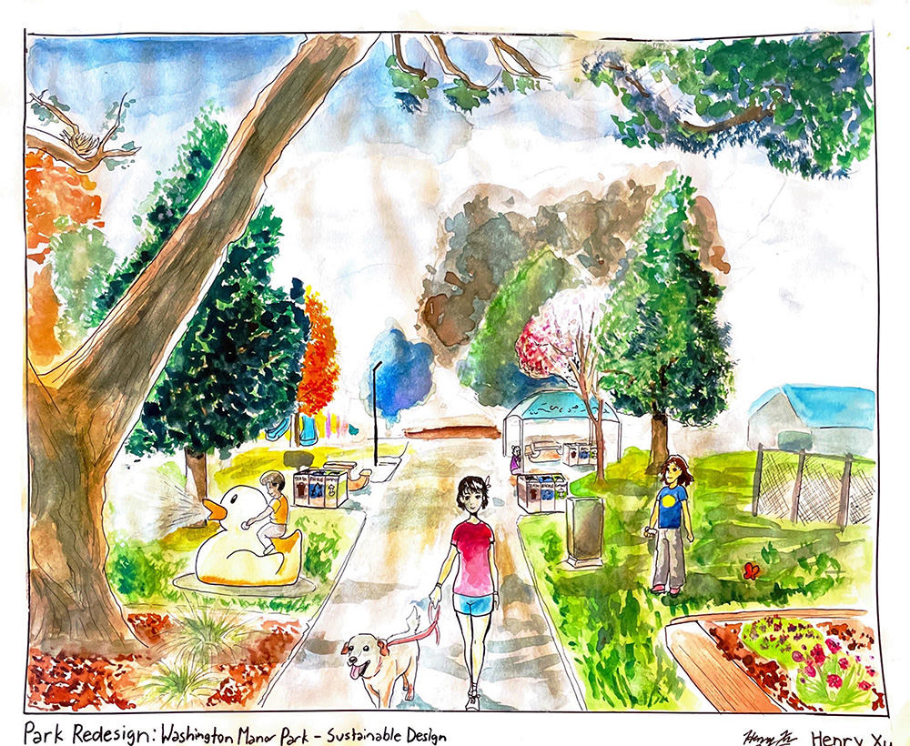
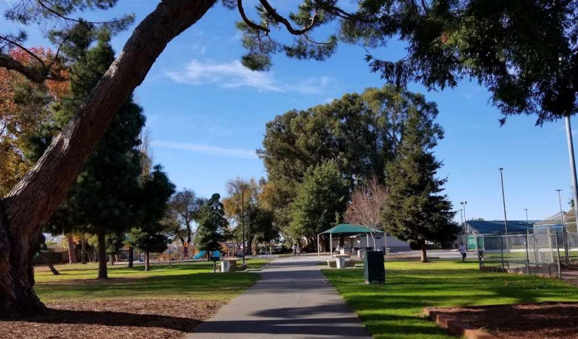
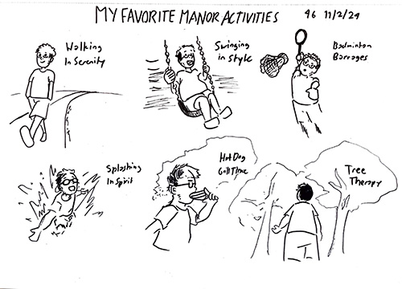
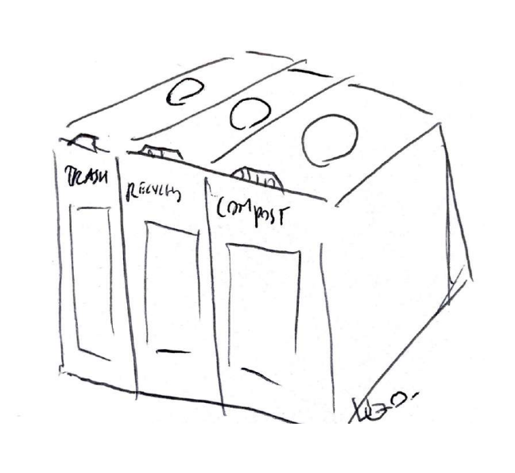
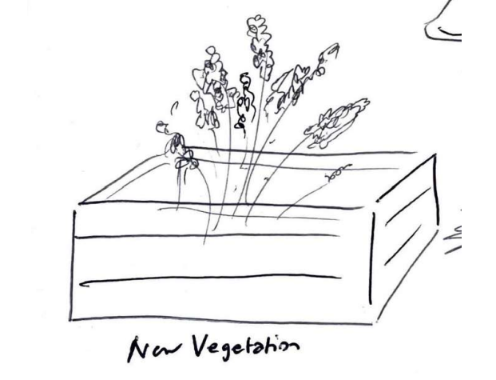
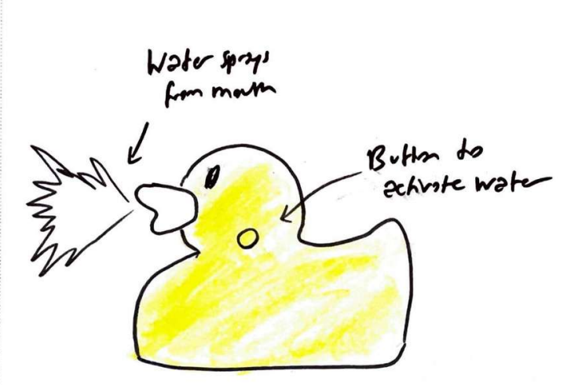
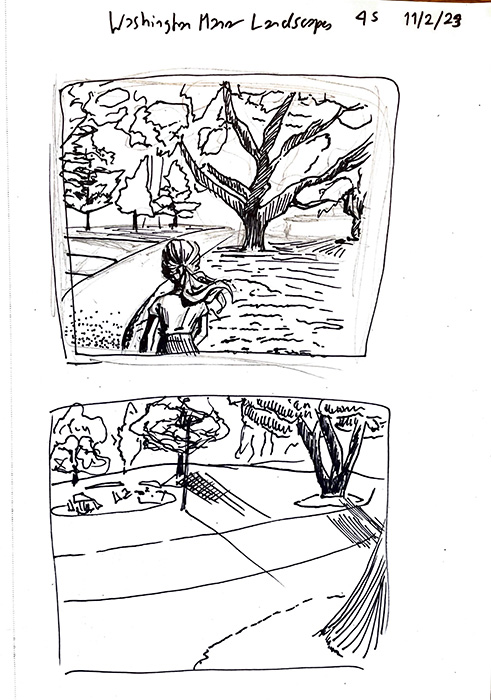
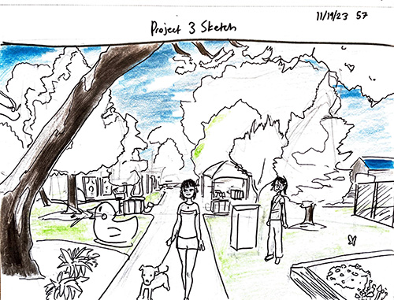

PARK REDESIGN
This project from DES 014 required us to select a city park that we have a personal connection to and redesign it. The park I selected was Washington Manor Park, from my hometown of San Leandro. A photo of the park is shown below:
For this assignment, we were asked to make certain inclusions, such as:
- A sustainable, community service, or accessibility design element
- 3 different types of vegetation
- A water element
- A man-made construction
Washington Manor Park already has many man-made constructions, but I needed to make additions to the park to redesign it and fulfil the requirments of the assignment.
BRAINSTORMING
To guide the direction of my redesign, I decided to reflect on what I enjoyed and what I disliked about Washington Manor Park, as shown below.

SUSTAINABLE DESIGN ELEMENT
The first thing I decided to incorporate was the sustainable design element, specifically waste bins for trash, recycling, and compost. As shown above, one of the major issues I had with Washington Manor in its current state was its metal bins, both in how they were pretty nasty and not that good for the environment (no recycling or compost options). This additon to the park seeks to remedy that environmental issue while making the park appear cleaner and more approachable.
VEGETATION
I decided to use some of the plants close to where I was living on campus in my redesign. These plants would help to make the park more colorful and vibrant.
WATER ELEMENT
For my water element, I chose to incorporate an interactable fountain shaped like a duck. The idea for the interactable fountain was inspired by the ones found in another park I frequent. With a press of a button, water will spray out of the duck's mouth, acting as a fun summer activity where kids can cool off. The saturated yellow color of the fountain matches with the bright playground equipment.
COMPOSITION SKETCHES
Finally, I needed to create a composition to present my redesign. I ended up choosing the last composition, based on the photo of the park shown previously, to create my final design.
 